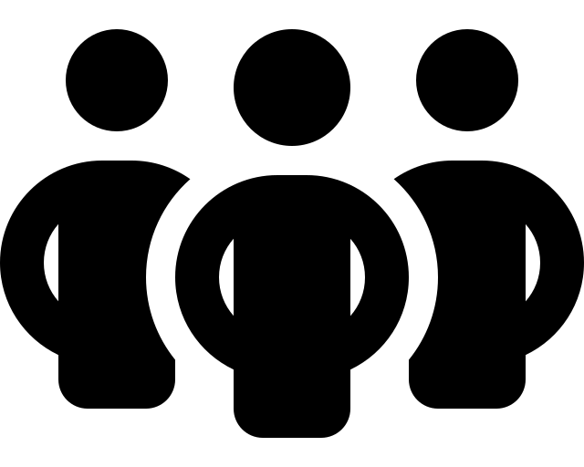
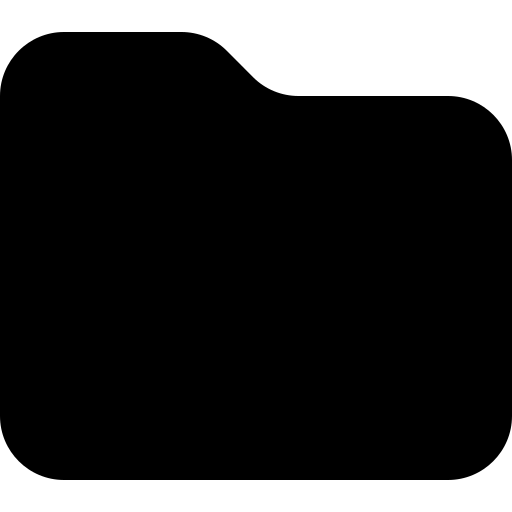

ONG Kili-Isère - Aide au développement
ONG Kili-Isère - Aide au développement
6 mai 1999, L’association loi 1901 est déclarée en préfecture de l’Isère. Son nom est constitué par l’amalgame des noms d’une rivière guinéenne (Kili) et française (Isère). Kili-Isère a été créée à l’origine sur des bases quasi familiales pour soutenir l’école de Larafeya (surnommée Ouin-Ouin) située à 25 km de Forécariah. L’association a financé l’achat de livres scolaires, les sanitaires de l’école, et les maillots et ballons de foot pour le tournoi régional organisé par l’école.
Forécariah se trouve en République de Guinée. Pays situé au Nord-Ouest de l’Afrique, à environ 6 heures de vol de Paris, il couvre une superficie de 245 845 Km2 avec plus de 300 km de littoral Atlantique. La « Guinée Conakry » comme l’appelle parfois certains journalistes est entourée de 6 pays : - La Guinée Bissau au Nord-Ouest - Le Sénégal et le Mali au Nord-Est - La Côte d’Ivoire à l’Est - La Sierra Léone et le Libéria au Sud
La République de Guinée est un état laïc doté d’un régime présidentiel pluraliste. La langue officielle est le français, plusieurs langues vernaculaires sont parlées comme le malinké, le peul, le soussou, le toma , le guerzé, le koniagui, le nalou, le landouma, le baga.
Quatre régions naturelles le composent : - La Basse Guinée( maritime) - la Moyenne Guinée, - la Haute Guinée - la Guinée Forestière. Le pays est subdivisé en 8 provinces : Conakry, Kindia, Boké, Mamou, Labé, Faranah, Kankan et N’Zérékoré dirigées par des gouverneurs.
Forécariah, une préfecture et une commune urbaine Forécariah est une préfecture dépendant de la région administrative de Kindia La commune urbaine de Forécariah est située à 100 km de la capitale Conakry, elle se compose de 6 quartiers. Sa population totale est de 12400 habitants : 6323 femmes, 6077 hommes. Créée le 3 aout 1991 suivant le décret n°91-03/PRG/SSG/91 elle compte trois générations de maire. Elle est arrosée par le fleuve Kissi-Kissi long de 25 km se jetant dans l’Océan Atlantique, traversé par un pont en fer d’une longueur de 225 m qui mène sur le centre ville. La religion musulmane est dominante, les religions catholiques et protestantes sont présentes. Zône agro-pastorale, ses activités principales sont: la culture,la pêche, l’élevage, le maraîchage. Les instruments de musique traditionnels sont : le balafon, le tam-tam, la flute, la cora, le goni, le drom, la cascagnette, le boté avec sa cloche.
Ouin-Ouin est le surnom donné au lieu-dit Wegé-Wégné situé à 25km de Forécariah. L’école accueille 160 élèves. Nos réalisations sur le terrain d'aide à l'l'alphabétisation des jeunes se matérialisent comme suit: Envoi de livres scolaires , Financement des sanitaires, Maillots et ballons de foot pour le tournoi régional organisé par l'école. Pour mener à bien ces actions, nous avons réalisé plusieurs types d'animations afin de réunir les fonds nécessaires: - Après-midi jeux africaines pour les enfants de 6 à 12 ans, intervention dans les écoles, collecte de vêtements chez Schneider-Electric, soirées récréatives...
Forte d'une situation géographique stratégique aux portes de Grenoble, Sassenage compte 11 895 habitants.
M. Facine Yansane, originaire de Forécariah, entrepreneur à Sassenage, et co-fondateur de l’association Kili-Isère a attiré l’attention de M. Christian Coigné, maire de Sassenage sur les échanges possibles entre les deux communes.
Une délégation constituée par M et Mme Coigné et M et Mme Yansane s’est rendue à Forécariah en Novembre 2002. Elle a été accueillie par Mme Hadja Maciré Fofana, maire de Forécariah, l’une des 3 femmes maires de Guinée. Une semaine de découverte et de séances de travail ont abouti à un projet de signature de convention de coopération décentralisée.
Novembre 2002, la signature d’une convention de coopération décentralisée entre les communes de Forécariah et de Sassenage, l’association se transforme en ONG qui sert de relais entre ces deux communes et s’est ouverte à de nouveaux adhérents.
Les membres fondateurs : Mme Ilda Yansane et M. Facinet Yansane
Les membres de d’honneur : le Maire de Sassenage, le Maire de Forécariah.
Le bureau :
- Ilda Yansane, André Carrier, Sylvie Boaglio
- les membres actifs ou adhérents les deux ambassades des deux pays
- Les services techniques de la commune de Sassenage
- Le lycée technique du Bâtiment Deschaux
- Des ONG poursuivant des objectifs similaires : Les amis du Futur , Aide et Action...
Kili-Isère contribue au développement de Forécariah au plan communal, culturel, sanitaire, éducatif grâce à :
- La participation à la formation des élus et des cadres de la commune.
- La création d’un parc de véhicules techniques principalement destinés à l’assainissement (camion poubelle et camion pompier moto pompe). Ils seront utilisés sur la commune mais également loués aux communes périphériques. Ceci générera plusieurs emplois et un revenu qui contribuera en partie au financement des autres projets communaux soutenus par Sassenage et Kili-Isère.
- La construction d’un espace d’accueil est indispensable pour l’hébergement des formateurs, des délégations officielles, des membres de l’association … dans des conditions sanitaires acceptables. Cette structure servira également de base au développement d’un circuit de tourisme équitable. Aucun hôtel n’est implanté à Forécariah rn 2002
- La construction d’une école d’enseignement technique du bâtiment, en s’appuyant sur le lycée Deschaux de Sassenage et en collaboration ave le service culturel de l’ambassade de France à Conakry et le ministère de l’éducation national guinéen
Suite à une succession de crises sanitaires (Ebola, Covid) et d'instabilité politique, l'ONG du suspendre temporairement son activité.
Nous relançons donc l'association depuis 2021
- Soutien à l'école de oin-oin (livres scolaires, construction sanitaires...)
- Envoie des camions donnés par la commune de Sassenage
- Construction d'un espace d'accueil à Forécariah
- La semaine guinéenne à Sassenage du 18 au 24 octobre 2004.
- La construction d’un lycée technique du bâtiment
- Maintenir le soutien à l’école de Ouin-Ouin
- L' initiation au tourisme équitable avec l'espace d'accueil
- Le soutien aux associations locales de développement d'activités agricoles
et artisanale
- Le soutien aux programmes de prévention sanitaire et environnementale
des associations déjà actives en Guinée.
KILI-ISERE, 4b square de la Libération , 38360 Sassenage
kiliisere@outlook.com
06 99 24 00 81
Président : Facine Yansane
Secrétaire: Ilda Yansane
SIRET: 888929247 00011
Association déclarée (code: 9220)

IBAN: FR76 3000 3009 9900 0372 8684 267
Réception de Mr et Mme le Maire de Sassenage à Forécariah
Donation d'un camion pompier et benne de part la commune de Sassenage à la commune de Forécariah
Vestige de la guerre frontalière avec la Sierra Léone
La Case, maison d'accueil de Kili-Isère à Forécariah
Le Baobab à l'entrée de Forécariah
Les enfants de l'école de Ouin-Ouin
Elèves d'une classe de primaire de Forécariah
Fillette portant son frère
La mangrove
Signature de la convention de coopération décentralisée par Mme Fofana, Maire de Forécariah et M. Coigné, Maire de Sassenage
Vente de pasteque au bord de route sur le trajet Conakry-Forécariah
Fleuve KILI depuis le pont de Forécariah